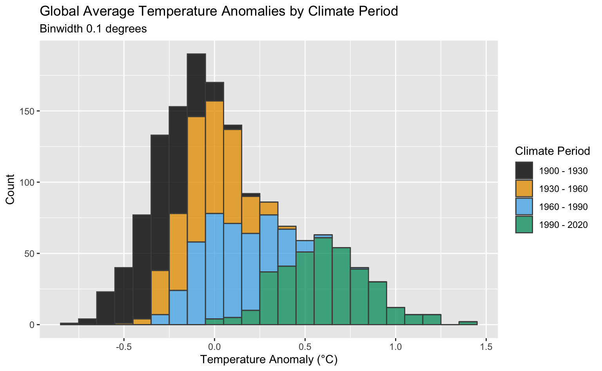

flowchart LR A(Import) --> B(Tidy) --> C(Transform) --> D(Visualize)
Global Temperature Anomaly Data Analysis (using R)
To Do:
Add insight after plots
modify plots: try different color scheme on freq distribution, try alpha = 0.5
new plots:
most recent climate period: temps > 1.5 C plot with global, northern and southern lines regression line by climate period
most recent 10 years stacked bar chart - counts bracket degree by climate period x axis <-1 <0 <1 <2 >2
Objectives
- visualize global temperature anomaly data trends to reveal insights
- assign climate periods and compare differences
- identify frequency of temperatures greater than 1.5°C
- the significance of 1.5 C is explained here: https://www.ipcc.ch/sr15/
- show complete data analysis workflow using R
Data
This analyis will use the following surface temperature anomaly data (1880 until present): - Monthly average temperature anomalies - Global - Northern Hemisphere - Southern Hemisphere The data is retrieved from The NASA Goddard Institue for Space Studies website https://data.giss.nasa.gov/gistemp/
Process
This analyis will use these data analyis steps:
The process used in this analysis has been learned from the book “R for Data Science (2e)”, written by Hadley Wickham, Mine Çetinkaya-Rundel, and Garrett Grolemund. https://r4ds.hadley.nz
Packages
library(tidyverse)
library(viridis)
library(paletteer)
library(patchwork)Climate Periods
The World Meteorological Organization considers a thirty-year period to be the minimum required to calculate the average climate, known as a climate normal. These normals are updated every decade to reflect changes in the climate, with the most recent standard period being 1991-2020.
climate_periods_end <- c(1930,1960,1990,2020)
climate_periods_start <- climate_periods_end - 29
climate_periods = paste(
as.character(climate_periods_start),"-",
as.character(climate_periods_end))
climate_periods[1] "1901 - 1930" "1931 - 1960" "1961 - 1990" "1991 - 2020"1 Import
1.1 Paths
csv_url = "https://data.giss.nasa.gov/gistemp/tabledata_v4/"
csv_file_names <- c("GLB.Ts+dSST.csv",
"NH.Ts+dSST.csv",
"SH.Ts+dSST.csv")1.2 Download
Code
df_list <- list()
skip_header_recs <- c(1, 1, 1)
for (i in 1:length(csv_file_names)) {
csv_file_path <- paste(csv_url, csv_file_names[i], sep = "")
csv_save_path <- file.path("data", "raw", "tabular", csv_file_names[i])
df <- read_csv(file=csv_file_path,
skip=skip_header_recs[i],
na = "***",
show_col_types = FALSE)
df_list[[i]] <- df
}
global_raw_data <-df_list[[1]]
northern_raw_data <-df_list[[2]]
southern_raw_data <-df_list[[3]] 1.3 Results
glimpse(global_raw_data)Rows: 146
Columns: 19
$ Year <dbl> 1880, 1881, 1882, 1883, 1884, 1885, 1886, 1887, 1888, 1889, 1890…
$ Jan <dbl> -0.20, -0.20, 0.16, -0.29, -0.13, -0.59, -0.44, -0.72, -0.34, -0…
$ Feb <dbl> -0.25, -0.15, 0.13, -0.37, -0.08, -0.34, -0.51, -0.58, -0.36, 0.…
$ Mar <dbl> -0.09, 0.02, 0.04, -0.12, -0.36, -0.27, -0.43, -0.36, -0.41, 0.0…
$ Apr <dbl> -0.16, 0.04, -0.16, -0.19, -0.40, -0.42, -0.28, -0.35, -0.20, 0.…
$ May <dbl> -0.09, 0.06, -0.14, -0.18, -0.34, -0.45, -0.25, -0.31, -0.22, -0…
$ Jun <dbl> -0.22, -0.19, -0.23, -0.07, -0.35, -0.44, -0.35, -0.25, -0.17, -…
$ Jul <dbl> -0.20, 0.01, -0.16, -0.08, -0.31, -0.34, -0.18, -0.26, -0.10, -0…
$ Aug <dbl> -0.10, -0.04, -0.08, -0.14, -0.28, -0.31, -0.31, -0.36, -0.16, -…
$ Sep <dbl> -0.15, -0.16, -0.15, -0.22, -0.27, -0.28, -0.24, -0.26, -0.12, -…
$ Oct <dbl> -0.23, -0.22, -0.24, -0.12, -0.25, -0.24, -0.28, -0.36, 0.01, -0…
$ Nov <dbl> -0.23, -0.19, -0.17, -0.24, -0.34, -0.24, -0.28, -0.27, 0.03, -0…
$ Dec <dbl> -0.18, -0.07, -0.37, -0.11, -0.31, -0.10, -0.25, -0.33, -0.04, -…
$ `J-D` <dbl> -0.17, -0.09, -0.11, -0.18, -0.28, -0.34, -0.32, -0.37, -0.17, -…
$ `D-N` <dbl> NA, -0.10, -0.09, -0.20, -0.27, -0.35, -0.30, -0.36, -0.20, -0.0…
$ DJF <dbl> NA, -0.18, 0.07, -0.34, -0.11, -0.41, -0.35, -0.52, -0.35, 0.01,…
$ MAM <dbl> -0.11, 0.04, -0.09, -0.16, -0.37, -0.38, -0.32, -0.34, -0.28, 0.…
$ JJA <dbl> -0.17, -0.07, -0.16, -0.10, -0.31, -0.36, -0.28, -0.29, -0.14, -…
$ SON <dbl> -0.20, -0.19, -0.19, -0.19, -0.29, -0.25, -0.27, -0.30, -0.03, -…glimpse(northern_raw_data)Rows: 146
Columns: 19
$ Year <dbl> 1880, 1881, 1882, 1883, 1884, 1885, 1886, 1887, 1888, 1889, 1890…
$ Jan <dbl> -0.40, -0.32, 0.24, -0.59, -0.18, -1.03, -0.76, -1.09, -0.50, -0…
$ Feb <dbl> -0.54, -0.26, 0.19, -0.67, -0.12, -0.47, -0.85, -0.72, -0.63, 0.…
$ Mar <dbl> -0.24, -0.07, 0.00, -0.16, -0.65, -0.25, -0.72, -0.45, -0.65, -0…
$ Apr <dbl> -0.31, -0.03, -0.32, -0.31, -0.60, -0.50, -0.38, -0.40, -0.23, 0…
$ May <dbl> -0.06, 0.03, -0.25, -0.27, -0.37, -0.60, -0.35, -0.27, -0.16, -0…
$ Jun <dbl> -0.19, -0.35, -0.30, -0.13, -0.43, -0.47, -0.39, -0.22, -0.04, -…
$ Jul <dbl> -0.23, 0.08, -0.29, -0.07, -0.42, -0.36, -0.16, -0.26, -0.02, -0…
$ Aug <dbl> -0.28, -0.07, -0.18, -0.24, -0.53, -0.43, -0.45, -0.57, -0.23, -…
$ Sep <dbl> -0.26, -0.29, -0.27, -0.35, -0.46, -0.41, -0.34, -0.22, -0.21, -…
$ Oct <dbl> -0.32, -0.45, -0.53, -0.18, -0.46, -0.38, -0.33, -0.50, -0.05, -…
$ Nov <dbl> -0.46, -0.39, -0.35, -0.46, -0.59, -0.40, -0.42, -0.29, -0.02, -…
$ Dec <dbl> -0.43, -0.25, -0.71, -0.17, -0.48, -0.12, -0.22, -0.45, -0.25, -…
$ `J-D` <dbl> -0.31, -0.20, -0.23, -0.30, -0.44, -0.45, -0.45, -0.45, -0.25, -…
$ `D-N` <dbl> NA, -0.21, -0.19, -0.35, -0.42, -0.48, -0.44, -0.43, -0.27, -0.1…
$ DJF <dbl> NA, -0.34, 0.06, -0.66, -0.16, -0.66, -0.58, -0.68, -0.53, -0.09…
$ MAM <dbl> -0.21, -0.03, -0.19, -0.25, -0.54, -0.45, -0.48, -0.37, -0.35, 0…
$ JJA <dbl> -0.23, -0.12, -0.26, -0.15, -0.46, -0.42, -0.33, -0.35, -0.10, -…
$ SON <dbl> -0.35, -0.38, -0.39, -0.33, -0.50, -0.40, -0.36, -0.34, -0.09, -…glimpse(southern_raw_data)Rows: 146
Columns: 19
$ Year <dbl> 1880, 1881, 1882, 1883, 1884, 1885, 1886, 1887, 1888, 1889, 1890…
$ Jan <dbl> 0.01, -0.08, 0.07, -0.02, -0.08, -0.19, -0.14, -0.36, -0.20, 0.0…
$ Feb <dbl> 0.04, -0.05, 0.08, -0.07, -0.05, -0.22, -0.19, -0.43, -0.12, 0.0…
$ Mar <dbl> 0.07, 0.10, 0.08, -0.08, -0.09, -0.29, -0.16, -0.27, -0.20, 0.14…
$ Apr <dbl> -0.01, 0.10, -0.01, -0.06, -0.21, -0.35, -0.19, -0.30, -0.19, 0.…
$ May <dbl> -0.12, 0.09, -0.03, -0.09, -0.31, -0.32, -0.14, -0.34, -0.28, 0.…
$ Jun <dbl> -0.24, -0.04, -0.14, -0.01, -0.28, -0.42, -0.31, -0.27, -0.30, -…
$ Jul <dbl> -0.16, -0.06, -0.03, -0.07, -0.20, -0.32, -0.20, -0.26, -0.19, -…
$ Aug <dbl> 0.07, -0.01, 0.02, -0.04, -0.06, -0.21, -0.18, -0.16, -0.08, -0.…
$ Sep <dbl> -0.04, -0.03, -0.03, -0.09, -0.10, -0.18, -0.14, -0.29, -0.03, -…
$ Oct <dbl> -0.14, 0.00, 0.04, -0.05, -0.06, -0.12, -0.23, -0.21, 0.07, -0.0…
$ Nov <dbl> 0.00, 0.00, -0.01, -0.04, -0.10, -0.11, -0.15, -0.24, 0.07, -0.0…
$ Dec <dbl> 0.06, 0.10, -0.06, -0.05, -0.14, -0.09, -0.28, -0.22, 0.16, -0.0…
$ `J-D` <dbl> -0.04, 0.01, 0.00, -0.06, -0.14, -0.24, -0.19, -0.28, -0.11, -0.…
$ `D-N` <dbl> NA, 0.01, 0.01, -0.06, -0.13, -0.24, -0.18, -0.29, -0.14, -0.01,…
$ DJF <dbl> NA, -0.02, 0.08, -0.05, -0.06, -0.19, -0.14, -0.36, -0.18, 0.09,…
$ MAM <dbl> -0.02, 0.10, 0.01, -0.08, -0.20, -0.32, -0.17, -0.30, -0.22, 0.0…
$ JJA <dbl> -0.11, -0.04, -0.05, -0.04, -0.18, -0.32, -0.23, -0.23, -0.19, -…
$ SON <dbl> -0.06, -0.01, 0.00, -0.06, -0.08, -0.14, -0.17, -0.25, 0.04, -0.…2 Tidy
2.1 Function
Code
fn_tidy <- function(df, pivot_cols, pivot_name) {
sel_cols <- c("Year", pivot_cols)
dft <- df |>
select(all_of(sel_cols)) |>
pivot_longer(
cols=all_of(pivot_cols),
names_to = pivot_name,
values_to = "Anomaly",
values_drop_na = TRUE)
return(dft)
}2.2 Parameters
Code
pivot_name <- "Month"
pivot_cols <- colnames(global_raw_data[,2:13])
global_tidy_data <- fn_tidy(global_raw_data, pivot_cols, pivot_name)
northern_tidy_data <- fn_tidy(northern_raw_data, pivot_cols, pivot_name)
southern_tidy_data <- fn_tidy(southern_raw_data, pivot_cols, pivot_name)2.3 Results
glimpse(global_tidy_data)Rows: 1,745
Columns: 3
$ Year <dbl> 1880, 1880, 1880, 1880, 1880, 1880, 1880, 1880, 1880, 1880, 18…
$ Month <chr> "Jan", "Feb", "Mar", "Apr", "May", "Jun", "Jul", "Aug", "Sep",…
$ Anomaly <dbl> -0.20, -0.25, -0.09, -0.16, -0.09, -0.22, -0.20, -0.10, -0.15,…glimpse(northern_tidy_data)Rows: 1,745
Columns: 3
$ Year <dbl> 1880, 1880, 1880, 1880, 1880, 1880, 1880, 1880, 1880, 1880, 18…
$ Month <chr> "Jan", "Feb", "Mar", "Apr", "May", "Jun", "Jul", "Aug", "Sep",…
$ Anomaly <dbl> -0.40, -0.54, -0.24, -0.31, -0.06, -0.19, -0.23, -0.28, -0.26,…glimpse(southern_tidy_data)Rows: 1,745
Columns: 3
$ Year <dbl> 1880, 1880, 1880, 1880, 1880, 1880, 1880, 1880, 1880, 1880, 18…
$ Month <chr> "Jan", "Feb", "Mar", "Apr", "May", "Jun", "Jul", "Aug", "Sep",…
$ Anomaly <dbl> 0.01, 0.04, 0.07, -0.01, -0.12, -0.24, -0.16, 0.07, -0.04, -0.…3 Transform
3.1 Identifiers
month_codes <- c("Jan", "Feb", "Mar", "Apr", "May", "Jun",
"Jul", "Aug", "Sep", "Oct", "Nov", "Dec")
seasons <- c("Winter","Spring","Summer","Autumn")
global_identifier <- "G"
global_label <- c("Global")
hemisphere_identifiers <- c("S","N")
hemisphere_labels <- c("Southern", "Northern")
decade_start <- global_tidy_data[[nrow(global_tidy_data),1]] - 103.2 Functions
Add climate period function
Code
fn_add_climate_period <- function(df,
climate_periods_end,
climate_periods)
{
# add 30 year climate period based on year
# change climate variable to factor and add labels
dfc <- df |>
mutate(Period = case_when(
Year <= climate_periods_end[1] ~ climate_periods[1],
Year <= climate_periods_end[2] ~ climate_periods[2],
Year <= climate_periods_end[3] ~ climate_periods[3],
Year <= climate_periods_end[4] ~ climate_periods[4]))
dfc$Period <- factor(dfc$Period,
levels=climate_periods,
labels=climate_periods)
return(dfc)
} Add season function
Code
fn_add_season <- function(df) {
dfs <- df |>
rename(Hemisphere=Identifier) |>
mutate(Season = case_when(
(Hemisphere == "N" & Month %in% c("Dec","Jan","Feb")) ~ seasons[1],
(Hemisphere == "N" & Month %in% c("Mar","Apr","May")) ~ seasons[2],
(Hemisphere == "N" & Month %in% c("Jun","Jul","Aug")) ~ seasons[3],
(Hemisphere == "N" & Month %in% c("Sep","Oct","Nov")) ~ seasons[4],
(Hemisphere == "S" & Month %in% c("Jun","Jul","Aug")) ~ seasons[1],
(Hemisphere == "S" & Month %in% c("Sep","Oct","Nov")) ~ seasons[2],
(Hemisphere == "S" & Month %in% c("Dec","Jan","Feb")) ~ seasons[3],
(Hemisphere == "S" & Month %in% c("Mar","Apr","May")) ~ seasons[4]))
dfs$Hemisphere <- factor(dfs$Hemisphere,
levels=hemisphere_identifiers,
labels=hemisphere_labels)
dfs$Season <- factor(dfs$Season,
levels=seasons)
return(dfs)
}Transform data function
Code
fn_transform_monthly <- function(df, id) {
dft <- df |>
filter(Year >= climate_periods_start[1]) |>
mutate(Identifier = id) |>
mutate(Identifier = factor(Identifier)) |>
mutate(Year = as.integer(Year)) |>
mutate(Decade = as.integer(Year - (Year %% 10) + 10))
dft$Month <- factor(dft$Month, levels=month_codes)
dfc <- fn_add_climate_period(dft, climate_periods_end, climate_periods) |>
select(Identifier, Period, Decade, Year, Month, Anomaly)
return(dfc)
}3.3 Transform global data
Code
global_transformed_data <- fn_transform_monthly(global_tidy_data,id="G")
global_transformed_data$Identifier <-
factor(global_transformed_data$Identifier,
levels=global_identifier,
labels=global_label)Results
glimpse(global_transformed_data)Rows: 1,493
Columns: 6
$ Identifier <fct> Global, Global, Global, Global, Global, Global, Global, Glo…
$ Period <fct> 1901 - 1930, 1901 - 1930, 1901 - 1930, 1901 - 1930, 1901 - …
$ Decade <int> 1910, 1910, 1910, 1910, 1910, 1910, 1910, 1910, 1910, 1910,…
$ Year <int> 1901, 1901, 1901, 1901, 1901, 1901, 1901, 1901, 1901, 1901,…
$ Month <fct> Jan, Feb, Mar, Apr, May, Jun, Jul, Aug, Sep, Oct, Nov, Dec,…
$ Anomaly <dbl> -0.23, -0.12, 0.05, -0.04, -0.16, -0.13, -0.15, -0.22, -0.2…3.4 Transform hemisphere data
Code
northern_transformed_data <- fn_transform_monthly(northern_tidy_data,id="N")
southern_transformed_data <- fn_transform_monthly(southern_tidy_data,id="S")
hemisphere_transformed_data <- dplyr::bind_rows(northern_transformed_data, southern_transformed_data)
hemisphere_transformed_data<- fn_add_season(hemisphere_transformed_data)Results
glimpse(hemisphere_transformed_data)Rows: 2,986
Columns: 7
$ Hemisphere <fct> Northern, Northern, Northern, Northern, Northern, Northern,…
$ Period <fct> 1901 - 1930, 1901 - 1930, 1901 - 1930, 1901 - 1930, 1901 - …
$ Decade <int> 1910, 1910, 1910, 1910, 1910, 1910, 1910, 1910, 1910, 1910,…
$ Year <int> 1901, 1901, 1901, 1901, 1901, 1901, 1901, 1901, 1901, 1901,…
$ Month <fct> Jan, Feb, Mar, Apr, May, Jun, Jul, Aug, Sep, Oct, Nov, Dec,…
$ Anomaly <dbl> -0.37, -0.12, 0.24, 0.08, -0.14, -0.02, -0.01, -0.18, -0.30…
$ Season <fct> Winter, Winter, Spring, Spring, Spring, Summer, Summer, Sum…4 Visualize
Plot parameters
Code
plot_caption <- ""
plot_transparency <- 0.9
scale_option <- "D"
scale_direction <- -1
scale_beg <- 0.2
scale_end <- 1.04.1 Overall Trend
Code
palette <- "pals::coolwarm"
y_limits <- c(min(global_transformed_data$Anomaly),
max(global_transformed_data$Anomaly))
layout <- "
AAAAA
AAAAA
"
p1 <- ggplot(global_transformed_data, aes(x=Year, y = Anomaly)) +
geom_point(aes(color = Anomaly)) +
ylim(y_limits ) +
scale_color_paletteer_c(palette=palette, direction = 1) +
geom_smooth(method = "lm") +
labs(
title = "Global Average Temperature Anomalies\n1881-2024",
subtitle = "By Month",
y = "Anomaly",
color = "Anomaly\n°C") +
theme(axis.title.x=element_blank())
p1
Code
palette <- "pals::coolwarm"
y_limits <- c(min(global_transformed_data$Anomaly),
max(global_transformed_data$Anomaly))
layout <- "
AAABB
"
p2 <- global_transformed_data |>
group_by(Year) |>
summarize(avg_anomaly = mean(Anomaly)) |>
ggplot(aes(x = Year, y = avg_anomaly)) +
geom_line(aes(color = avg_anomaly),
linewidth=0.8,
show.legend = FALSE) +
ylim(y_limits ) +
scale_color_paletteer_c(palette=palette, direction = 1) +
labs(subtitle = "By Year",
y = "Anomaly",
color = "Anomaly\n°C") +
theme(axis.title.x=element_blank())
p3 <- global_transformed_data |>
group_by(Decade) |>
summarize(avg_anomaly = mean(Anomaly)) |>
ggplot(aes(x = Decade, y = avg_anomaly, color = avg_anomaly)) +
geom_line(linewidth=0.8,show.legend = FALSE) +
geom_point(size=1.5,show.legend = FALSE) +
ylim(y_limits ) +
scale_color_paletteer_c(palette=palette, direction = 1) +
labs(subtitle = "By Decade",
color = "Anomaly\n°C") +
theme(axis.title.x=element_blank(),
axis.title.y=element_blank())
p_save_1 <- p2 + p3 +
plot_layout(design = layout) +
plot_layout(guides = 'collect') +
plot_annotation(
title = "Global Average Temperature Anomalies\n1881-2024",
caption = plot_caption)
p_save_1 4.2 Climate Period
scale_option <- "D"
scale_direction <- 1
scale_beg <- 0.0
scale_end <- 0.8Frequency Distribution
Code
climate_plot_1 <- global_transformed_data |>
filter(complete.cases(Period)) |>
ggplot(aes(x=Anomaly,fill=Period)) +
geom_area(stat="bin",
alpha=plot_transparency,
color="grey40") +
labs(
title = "Global Average Temperature Anomalies by Climate Period",
subtitle = "Frequency distribution",
x = "Temperature Anomaly (°C)",
y = "Count",
fill = "Climate Period") +
scale_fill_viridis(option=scale_option,
begin=scale_beg,
end=scale_end,
direction=scale_direction,
discrete=TRUE)
climate_plot_1
Histogram
Code
climate_plot_2 <- global_transformed_data |>
filter(complete.cases(Period)) |>
ggplot(aes(x=Anomaly,fill=Period)) +
geom_histogram(binwidth = 0.1,
alpha = plot_transparency,
color="grey30") +
labs(
title = "Global Average Temperature Anomalies by Climate Period",
subtitle = "Histogram (binwidth 0.1 degrees)",
x = "Temperature Anomaly (°C)",
y = "Count",
fill = "Climate Period") +
scale_fill_viridis(option=scale_option,
begin=scale_beg,
end=scale_end,
direction=scale_direction,
discrete=TRUE)
climate_plot_2
Boxplot
Code
climate_plot_3 <- global_transformed_data |>
filter(complete.cases(Period)) |>
ggplot(aes(x = Period, y = Anomaly, fill=Period)) +
geom_boxplot(alpha = plot_transparency,
show.legend = FALSE) +
labs(
title = "Global Average Temperature Anomalies by Climate Period",
subtitle = "Median, Interquartile Range, and Outliers",
x = "Climate Period",
y = "Anomaly °C",
fill = "Climate") +
scale_fill_viridis(option=scale_option,
begin=scale_beg,
end=scale_end,
direction=scale_direction,
discrete=TRUE)
climate_plot_3
By Hemisphere
Code
climate_plot_4 <- hemisphere_transformed_data |>
filter(complete.cases(Period)) |>
group_by(Period, Hemisphere) |>
summarize(avg_anomaly=mean(Anomaly)) |>
ggplot(aes(x = Period, y = avg_anomaly, fill = Period)) +
geom_bar(stat='identity',
position='dodge',
alpha = plot_transparency,
color="black") +
labs(title = "Average Temperature Anomaly By Hemisphere",
y = "Anomaly °C",
fill = "Climate Period") +
facet_wrap(~Hemisphere, ncol=2) +
scale_fill_viridis(option=scale_option,
begin = scale_beg,
end = scale_end,
direction = scale_direction,
discrete =TRUE) +
theme(axis.text.x = element_blank()) +
theme(axis.title.x = element_blank()) +
theme(axis.ticks.x = element_blank())
climate_plot_4
By Season
Code
climate_plot_5 <- hemisphere_transformed_data |>
filter(complete.cases(Period)) |>
group_by(Period, Season) |>
summarize(avg_anomaly=mean(Anomaly)) |>
ggplot(aes(x = Period, y = avg_anomaly, fill = Period)) +
geom_bar(stat='identity',
position='dodge',
alpha = plot_transparency,
color="black") +
facet_wrap(~Season, ncol=2) +
labs(title = "Average Temperature Anomaly By Season",
x = "Climate Period",
y = "Anomaly °C",
fill = "Climate Period") +
scale_fill_viridis(option=scale_option,
begin = scale_beg,
end = scale_end,
direction = scale_direction,
discrete =TRUE) +
theme(axis.text.x = element_blank()) +
theme(axis.title.x = element_blank()) +
theme(axis.ticks.x = element_blank())
climate_plot_5Bar chart by season, facet by hemisphere
4.3 Most Recent 10 Years
plot_data <- hemisphere_transformed_data |>
filter(Year >= decade_start) Code
decade_plot_1 <- plot_data |>
group_by(Hemisphere, Month) |>
summarize(avg_anomaly=mean(Anomaly)) |>
ggplot(aes(x = Hemisphere, y = avg_anomaly, fill = Month)) +
geom_bar(stat='identity',
position='dodge',
alpha = plot_transparency,
color="black") +
labs(title = "Average Temperature Anomaly By Hemisphere and Month",
subtitle = "2015-2025",
x = "Hemisphere",
y = "Anomaly °C") +
scale_fill_viridis(option=scale_option,
begin = scale_beg,
end = scale_end,
direction = scale_direction,
discrete =TRUE)
decade_plot_1scale_option <- "D"
scale_direction <- 1
scale_beg <- 0.0
scale_end <- 0.8Code
scale_option <- "D"
scale_direction <- 1
scale_beg <- 0.0
scale_end <- 0.7
decade_plot_2 <- plot_data |>
group_by(Hemisphere, Season) |>
summarize(avg_anomaly = mean(Anomaly)) |>
ggplot(aes(x = Hemisphere, y = avg_anomaly, fill=Season)) +
geom_bar(stat='identity',
position='dodge',
alpha = plot_transparency,
color="black") +
labs(title = "Average Temperature Anomaly By Hemisphere and Season",
subtitle = "2015-2025",
y = "Anomaly") +
scale_fill_viridis(option=scale_option,
begin=scale_beg,
end=scale_end,
direction=scale_direction,
discrete=TRUE) +
theme(axis.title.x=element_blank())
decade_plot_2